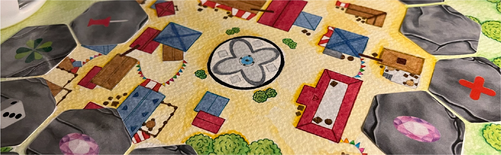
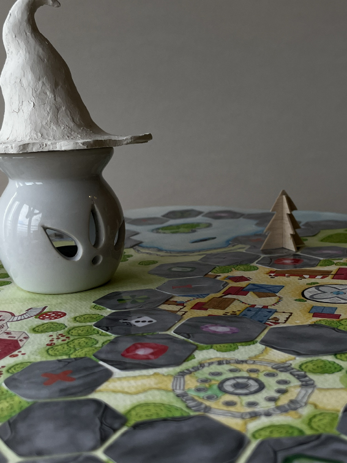

For this task, I had to create a boardgame from scratch. One the of
the key factors was the fact
that we couldn't use any type of digital
platforms. All of the board game needed to be done by
hand.


The Project
The Otherworld is a story-based board game designed to help players escape the stresses of everyday
life and connect with family and friends. In today's fast-paced world, stress levels are rising as
people juggle work and school. My game seeks to address this issue by creating a space where players
can immerse themselves in a fantasy universe, momentarily forgetting about the pressures of reality.
Drawing inspiration from the magical worlds like Winx Club and Onward, I created a game where
players take on the roles of protectors and villains, each with a unique backstory. This not only
enriches the gameplay but also helps players disconnect from real-world problems by diving into a
fully developed fantasy world.